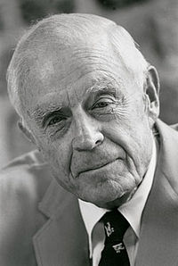

Thomas John Watson(Feb 17, 1874 to Jun 19, 1956) was an American businessman who served as the chairman and CEO of IBM. He oversaw the company's growth into an international force from 1914 to 1956. Watson developed IBM's management style and corporate culture from John Henry Patterson's training at NCR. He turned the company into a highly effective selling organization, based largely on punched card tabulating machines. A leading self-made industrialist, he was one of the richest men of his time and was called the world's greatest salesman when he died in 1956.
Charles Ranlett Flint, who had engineered the amalgamation (via stock acquisition) forming the Computing-Tabulating-Recording Company (CTR) found it difficult to manage the five companies. He hired Watson as general manager on May 1, 1914, when the five companies had about 1,300 employees. Eleven months later he was made President when court cases relating to his time at NCR were resolved. Within four years revenues had been doubled to $9 million. In 1924, he renamed CTR to International Business Machines. Watson built IBM into such a dominant company that the federal government filed a civil antitrust suit against it in 1952. IBM owned and leased to its customers more than 90 percent of all tabulating machines in the United States at the time. When Watson died in 1956, IBM's revenues were $897 million, and the company had 72,500 employees.
| CEO of IBM | |
|---|---|
| Thomas J Watson | 1914-1956 |